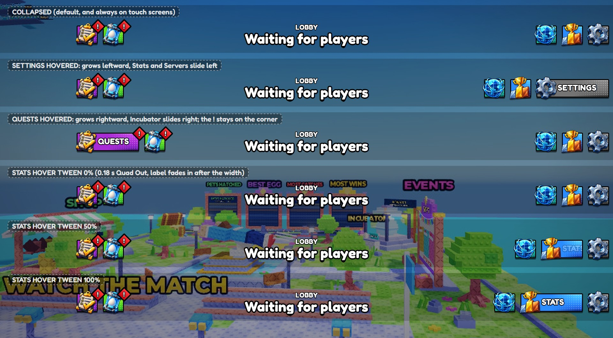
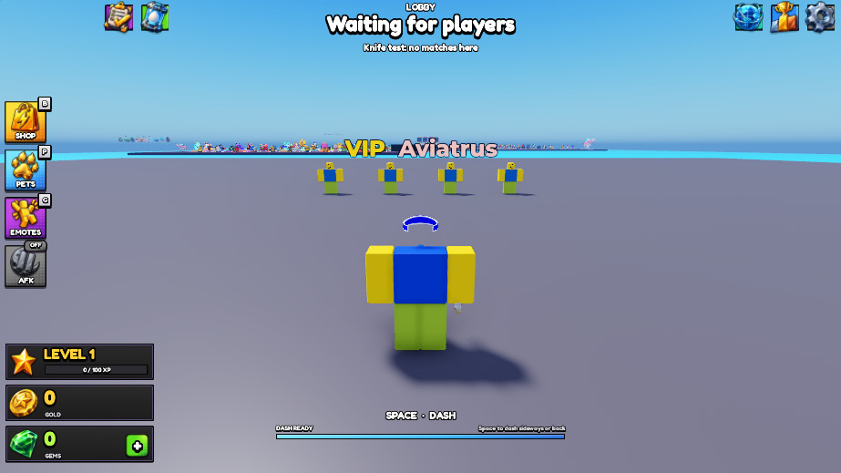
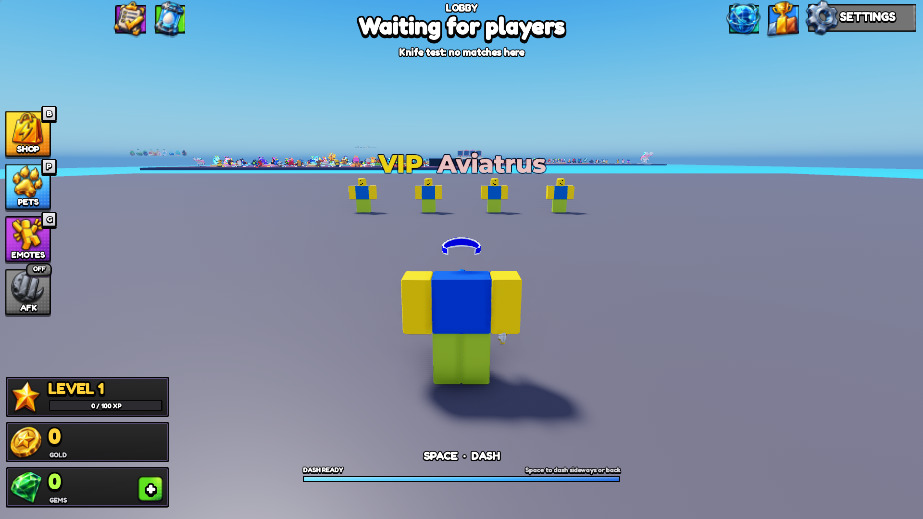
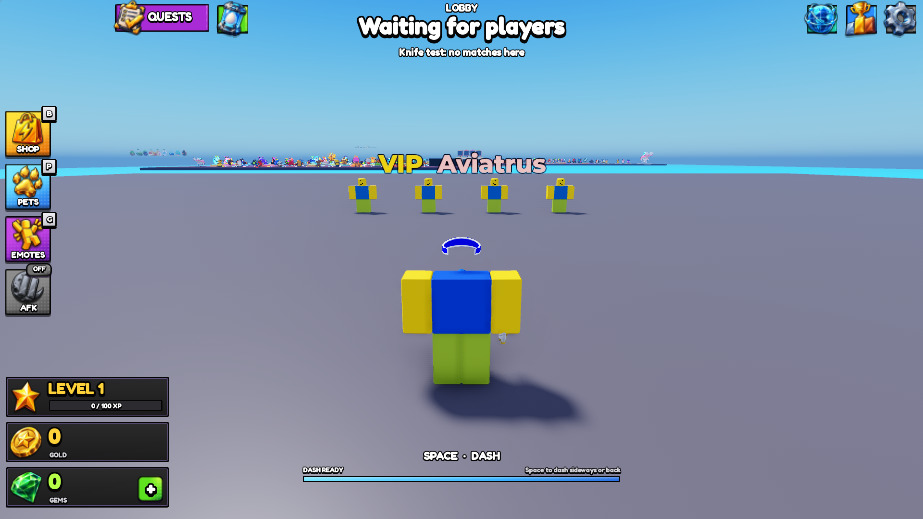
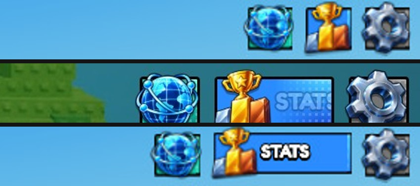
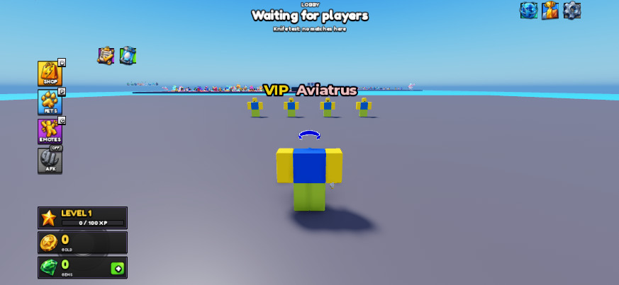

<title>Top bar hover review</title>
<meta name="claude:viewport-fit-sides" content="cover">
<style>
/* single column of captures, captions above each */
:root { --bg:#eef2f7; --fg:#18202b; --muted:#5a6575; --line:#cfd7e2; --accent:#2f6fd6;
  --display:"Fredoka", system-ui, sans-serif; --body:system-ui, -apple-system, "Segoe UI", sans-serif; }
@media (prefers-color-scheme: dark) { :root:not([data-theme="light"]) { --bg:#121822; --fg:#e6ebf2; --muted:#9aa6b8; --line:#2a3444; --accent:#6ea2ff; color-scheme:dark } }
:root[data-theme="dark"] { --bg:#121822; --fg:#e6ebf2; --muted:#9aa6b8; --line:#2a3444; --accent:#6ea2ff; color-scheme:dark }
body { background:var(--bg); color:var(--fg); font-family:var(--body); }
main { max-width:1000px; margin:0 auto; padding-block:32px 48px; padding-left:max(16px, env(safe-area-inset-left, 0px)); padding-right:max(16px, env(safe-area-inset-right, 0px)); display:grid; gap:36px; }
h1 { font-family:var(--display); font-size:2rem; margin:0; text-wrap:balance; }
header p { color:var(--muted); margin:6px 0 0; }
figure { margin:0; display:grid; gap:10px; }
figcaption { font-size:0.95rem; }
figcaption b { color:var(--accent); font-family:ui-monospace, Consolas, monospace; font-size:0.85rem; letter-spacing:0.02em; margin-right:8px; }
img { width:100%; height:auto; border:1px solid var(--line); border-radius:6px; display:block; }
</style>
<link rel="stylesheet" href="https://fonts.googleapis.com/css2?family=Fredoka:wght@600&display=swap">
<main>
  <header>
    <h1>Top bar hover review</h1>
    <p>HOS-TOPBAR-001 captures from Studio, in review order.</p>
  </header>
  <figure><figcaption><b>topbar_states.jpg</b>All states side by side: collapsed, Settings, Quests, Stats tween 0/50/100%</figcaption></figure>
  <figure><figcaption><b>a_pc_collapsed_topbar.jpg</b>PC, collapsed (default)</figcaption></figure>
  <figure><figcaption><b>b_settings_hovered.jpg</b>Settings hovered: grows leftward</figcaption></figure>
  <figure><figcaption><b>c_quests_hovered.jpg</b>Quests hovered: grows rightward</figcaption></figure>
  <figure><figcaption><b>e_stats_tween_3frames.jpg</b>Stats hover tween, three frames</figcaption></figure>
  <figure><figcaption><b>f_phone_844x390_topbar.jpg</b>Phone 844×390, always collapsed</figcaption></figure>
</main>
